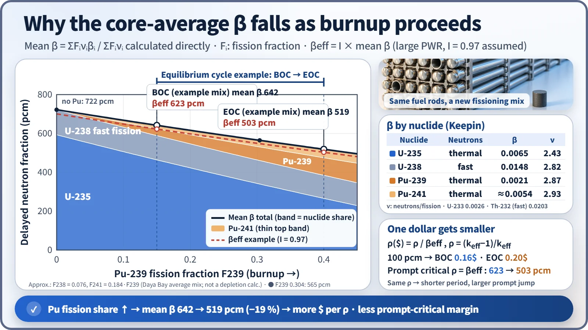
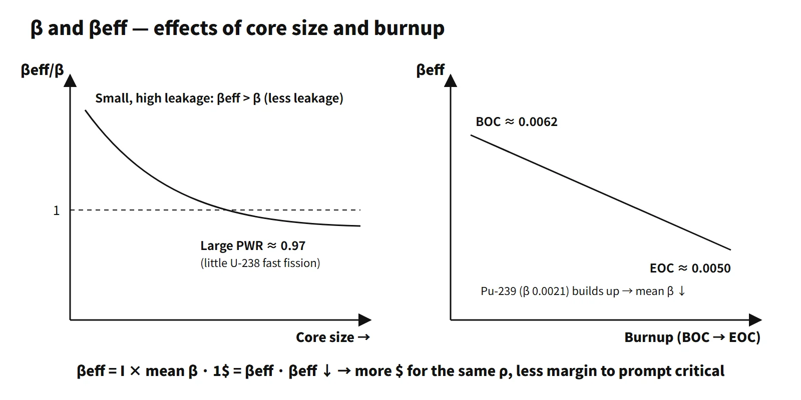

Reactor Physics & Kinetics · C-RX-014
Delayed Neutron Fraction and Effective Delayed Neutron Fraction (β, βeff) — β Set by the Nuclide, βeff Set by Importance, and a Dollar That Shrinks with Burnup
β is fixed by the fissioning nuclide, βeff by neutron importance, and Pu-239 build-up makes one dollar smaller toward end of cycle.
The delayed neutron fraction β is the share of delayed neutrons among all neutrons released by fission (β = νd/ν), a nuclear-data value fixed by the fissioning nuclide and the incident energy; the effective delayed neutron fraction βeff is the same fraction weighted by importance (the adjoint flux), and it is the kinetics parameter that actually enters the point kinetics equations, the inhour equation and the dollar unit (1$ = βeff).
A first line that shows the difference at once: "β is the physical fraction intrinsic to the nuclide; βeff is the effective fraction that accounts for the different importance of delayed neutrons, born at low energy, and it sets the size of one dollar."
Principle and mechanism
β: why it differs by nuclide
Only the size of the fraction is discussed here. Representative values from the Keepin data:
| Nuclide | Fission condition | β |
|---|---|---|
| Th-232 | Fast | 0.0203 |
| U-238 | Fast | 0.0148 |
| U-235 | Thermal (fast 0.0064) | 0.0065 |
| Pu-241 | Thermal | about 0.0054 |
| U-233 | Thermal and fast | 0.0026 |
| Pu-239 | Thermal (fast 0.0020) | 0.0021 |
The larger the neutron excess (N/Z) of the fissioning nucleus, the more neutron-rich its fission fragments, and the yield of delayed-neutron precursors such as Br-87 and I-137 tends to rise. And because β = νd/ν, Pu with its large ν ends up smaller through the denominator. The answer to the 2009 exam, session 1, Q13 (fast fission) is Th-232 > U-238 > U-235 > U-233 > Pu-239.
In a core where several nuclides fission, the average delayed neutron fraction β̄ is not a simple sum but a weighted average on a neutron-production basis:
β̄ = Σ Fᵢ·νᵢ·βᵢ / Σ Fᵢ·νᵢ (Fᵢ: fraction of fissions in nuclide i; νᵢ: total prompt + delayed neutrons per fission)
If only U-235 fissions, the value is 0.0065, but in a real core U-238 fast fission (β 0.0148) contributes about 7–8 % and pulls β̄ up; as burnup proceeds, Pu-239 pulls it down.
βeff: the difference that importance makes
The point kinetics equations count not the "number" of neutrons but their "contribution" to the chain reaction. Each neutron is therefore weighted by the importance φ† (adjoint flux) at its position and energy:
βeff = ⟨φ†, χd·νd·Σf·φ⟩ / ⟨φ†, χ·ν·Σf·φ⟩ = I·β̄
I is the average importance of delayed neutrons divided by the average importance of all fission neutrons. Delayed neutrons are born at about 0.25–0.6 MeV depending on the group, lower than prompt neutrons (average about 2 MeV). This difference works in two directions:
- Effect that raises I — less leakage: the slowing-down distance (Fermi age) is shorter, so the chance of leaking out of the core before thermalizing is smaller. In small, highly enriched thermal reactors with large leakage this effect dominates and βeff > β.
- Effect that lowers I — less fast-fission contribution: delayed neutrons are born below the U-238 fast-fission threshold (about 1 MeV), so they contribute very little to fast fission (ε).
As the reactor gets larger, leakage itself falls, the benefit of the first effect disappears and βeff approaches β. In a large, low-enriched PWR with small leakage the second effect is similar or slightly larger, giving I ≈ 0.97 or so (example), slightly below 1. The premise "βeff > β" in the 2001 (65th) exam, session 2, Q3 describes a small, high-leakage core, so the answer should also explain the convergence with size. In fast reactors delayed neutrons can hardly cause threshold fission, so I < 1.
Change with burnup
As Pu-239 builds up and takes a share of the fissions, β̄ falls and βeff falls with it. In equilibrium-core data (one third fresh fuel) reported by the Daya Bay collaboration, the Pu-239 fission fraction is about 0.15 at the beginning of cycle and about 0.40 at the end, and the average composition is U-235 : U-238 : Pu-239 : Pu-241 = 0.564 : 0.076 : 0.304 : 0.056. Calculating with an approximation fitted to this average (F238 fixed, F241 ∝ F239) gives β̄ of 642 pcm at BOC → 519 pcm at EOC (about 19 % lower), and βeff (assuming I = 0.97) of 623 → 503 pcm. This is an illustrative approximation, not a depletion calculation, and values differ from core to core.

What it means in a plant
- One dollar gets smaller: the dollar value of the same reactivity ρ is ρ/βeff, so it grows at EOC. 100 pcm is about 0.16$ at BOC and about 0.20$ at EOC.
- Kinetics get faster: in the one-group approximation T ≈ (βeff − ρ)/(λρ), a smaller βeff gives a shorter period for the same ρ. The prompt jump βeff/(βeff − ρ) also gets larger.
- Reactivity accident analysis: in events that insert positive reactivity, such as rod ejection, a low βeff can be conservative, so the range of βeff over the cycle is checked as an analysis input. Which point in the cycle is limiting is decided event by event, together with the reactivity coefficients.
- Physics testing: the reactivity computer used for rod-worth measurements after refueling must be given that cycle's design βeff and λᵢ. If they are wrong, the measured rod worth is off in proportion to the βeff error.
- Reactor-type differences: MOX-loaded cores have a larger Pu share and a smaller βeff; in heavy-water reactors, photoneutrons act as additional delayed groups.
Regulatory basis
- NUREG-0800 SRP 4.3 (Nuclear design): reviews the calculation methods and uncertainties of kinetics parameters such as βeff and the prompt neutron lifetime. SRP 15.4.8 (Rod ejection) uses these parameters as analysis inputs.
- Reactivity accident criteria: RG 1.77 (1974) was replaced by RG 1.236 in 2020.
- 10 CFR 50 Appendix A: GDC 11 (Reactor inherent protection), GDC 28 (Reactivity limits).
- Physics testing: ANSI/ANS-19.6.1 (reload startup physics tests for PWRs) specifies tests based on reactivity measurement.
- South Korea: the Korean technical standard rule (Rules on the Technical Standards for Reactor Facilities), Articles 18 (Inherent protection of the reactor) and 28 (Reactivity control systems), and KINS Safety Review Guideline Section 4.3 follow the same structure.
- IAEA: SSR-2/1 (Rev. 1, 2016), SSG-52 (2019).
- Changes since the questions were set: nothing has changed in the physics and definitions of β and βeff. Only the reactivity accident criteria were revised, to RG 1.236.
Easily confused pairs
| β (delayed neutron fraction) | β̄ (average) | βeff (effective) | |
|---|---|---|---|
| Definition | νd/ν, per nuclide | Average weighted by fission fraction and ν | Importance-weighted fraction |
| Determined by | Nuclide, incident energy | Core nuclide mix (burnup) | Mix + spectrum + leakage |
| Typical value | U-235 0.0065 | Fresh fuel about 0.0072 | Large PWR about 0.97β̄ |
| Use | Nuclear data | Intermediate value | Kinetics, dollar unit |
| BOC | EOC | |
|---|---|---|
| Pu-239 fission fraction | about 0.15 | about 0.40 |
| β̄ / βeff | 642 / 623 pcm | 519 / 503 pcm |
| Dollar value of 100 pcm | 0.16$ | 0.20$ |
Key points at a glance
- β: share of delayed neutrons among fission neutrons, β = νd/ν, intrinsic to the nuclide (U-235 0.0065).
- Order by nuclide (fast fission): Th-232 0.0203 > U-238 0.0148 > U-235 0.0064 > U-233 0.0026 > Pu-239 0.0020.
- β̄: core average, β̄ = ΣFᵢνᵢβᵢ/ΣFᵢνᵢ.
- βeff: importance-weighted (adjoint flux) fraction, βeff = I·β̄.
- Cause: delayed neutrons are born at low energy (about 0.4 MeV, prompt about 2 MeV).
- I ↑: short slowing-down distance → less leakage → βeff > β in small, high-leakage cores.
- I ↓: very little U-238 fast fission → large PWR I ≈ 0.97.
- Size: the larger the core, the closer βeff is to β (slightly below).
- Burnup: Pu-239 (0.0021) builds up → βeff falls (e.g. 623 → 503 pcm).
- Consequences: 1$ = βeff gets smaller → more dollars for the same ρ, less margin to prompt critical, shorter period → reflected in reactivity accident analysis.

This is a model answer, not an official solution. It reflects the criteria current as of 2026.
Exam relevance
β and βeff have appeared five times in the Korean Professional Engineer (Nuclear Power) exam: why βeff exceeds β and how it changes with reactor size (65th exam, 2001, session 2, Q3); ranking the total delayed neutron fractions of U-233, U-235, U-238, Pu-239 and Th-232 for fast fission (2009 exam, session 1, Q13); the effective versus the mean delayed neutron fraction (2011 exam, session 1, Q12); β versus βeff (2024 exam, session 1, Q1); and the effect of fuel burnup on βeff (2025 exam, session 1, Q13). Most are short-answer items that reward one precise distinction: β is nuclear data, β̄ is the core mix, βeff adds importance. When a question assumes "βeff > β", add that this holds for small, leaky cores and that in a large PWR βeff is slightly below β̄.